정규 표현식에 대한 쉬운 설명 + PySpark 실습
- 이번 포스팅은 정규 표현식의 네 가지 종류에 대해 알아보고 이를 PySpark에서 실습해보는 글을 작성하고자 합니다.
- 주요 내용은 정규 표현식 더 이상 미루지 말자 YouTube 강의를 참조하였습니다.
- 정규 표현식 실습 사이트는 링크를 참조하세요!
글을 쓰게 된 계기
며칠 전 업무를 하던 중 SQL 쿼리의 LIKE 연산자로 쓰면 여러 줄을 꼭 써줘야 하는 쿼리를 정규식으로 쉽게 표현한 적이 있었습니다.
직접적으로 언급하긴 어렵지만, 제가 처했던 난관과 비슷한 예로 이메일 주소에서 ID와 .com이나 .co.kr 전의 도메인을 추출하는 것을 들 수 있습니다.
만약 email이라는 컬럼에 다음과 같이 세 값이 저장되어 있다 가정합시다.
id와 메일 도메인을 뽑아 각각 id 컬럼과 domain 컬럼에 저장하면 다음과 같은 결과를 얻을 수 있을 것입니다.
| id | domain |
|---|---|
| hello | gmail |
| hello.eunji | kakao |
| hello.eunji12 | brunch |
이를 무식이 용감하다고 하드 코딩 하드 코딩이란 소스 코드에 데이터를 직접 입력해서 저장한 경우를 지칭합니다. 을 하게 되면
다음과 같습니다.
1 | select |
비추천할 코드이죠.
- 만약에 새로운 메일 도메인 (예를 들어,
@naver.com)이 추가 된다면case ... when...구문에 해당하는 경우가 추가되어야 하고, - 혹은 이메일에 오타라도 나서
@gmail.com대신@gamil.com이라 입력되었을 경우 어떠한 케이스에도 속하지 않기 때문에 NULL값을 반환하게 됩니다.
쿼리를 간단하게 작성해보자니 @ 앞, 뒤로 아이디와 도메인 문자열 길이가 제각각이기 때문에 substring과 같은 문자열을 자르는 함수도 쓰기 어려웠습니다.
이렇기 때문에 **각 케이스를 일반화할 코드는 없을까?**하여 정규 표현식을 찾게 되었습니다.
정규 표현식은 @ 앞, 뒤를 기준으로 패턴을 찾아주면 아이디와 도메인 문자열 길이가 제각각이여도 적절하게 찾을 수 있기 때문입니다.
위 예시에 대한 정규 표현식 답은 정규 표현식의 네 가지 종류를 먼저 알아보고, 실습에서 다시 언급하도록 하겠습니다!
정규 표현식의 네 가지 종류
정규 표현식이 어려운 이유는 정규 표현식이 어떻게 분류되는지 모르기 때문이라 생각합니다.
저도 이전부터 정규 표현식을 구글링한 경험이 많았지만, 항상 이해하지 못한 채 제가 원하는 정규 표현식만 찾아서 복붙하곤 했습니다.
위키 피디아에서 찾아봐도 이 네 가지 종류에 대한 언급이 없이 나열만 하고 있다 보니 어렵기만 합니다.
그러나 정규 표현식 더 이상 미루지 말자 강의에서는 정규 표현식의 네 가지 종류에 대해 명확히 설명하시고,
각각에 대해 예제를 보여줘서 처음 접하는 저도 쉽게 이해할 수 있었습니다. (강추!)
여기서 언급하고 있는 네 가지 종류는 다음과 같습니다.
- 그룹과 범위에 대한 표현 (Groups and ranges)
- 수량에 대한 표현 (Quantifiers)
- 경계의 종류 (Boundary types)
- 문자열의 종류 (Character classes)
차근차근 하나씩 알아보겠습니다.
잠깐만요! 그 전에 기본은 숙지합시다.
정규 표현식의 기본은 슬래시, 패턴, 플래그 이 세 가지를 기억하시면 됩니다.
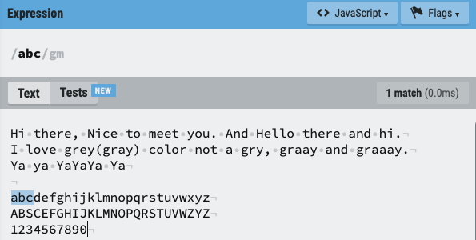
위의 이미지는 Text에서 abc라는 글자를 찾기 위한 정규식을 나타낸 것입니다.
여기서
- **/ (슬래시)**는 정규 표현식의 시작과 끝을 나타내는 기호로, 정규 표현식인
abc앞과 뒤에 붙여 줍니다. - 패턴은 정규 표현식으로 찾고자 하는 대상으로
abc에 해당합니다. - 플래그는 검색 옵션으로 여기선 마지막 / 뒤의
gm이 플래그입니다.
위 예시와 같이 정규 표현식의 패턴에 어떠한 기호 없이 문자열만 있어도 이에 해당하는 글자를 검색할 수 있습니다.
또한 플래그의 경우 다음과 같이 6개인데 자주 쓰이는 플래그인 g, m, i 만 설명드리겠습니다.
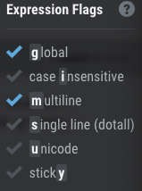
- g (global): 패턴과 일치하는 다수의 결과값들을 찾습니다. g 플래그가 없으면 패턴과 일치하는 첫 번째 결과만 반환됩니다.
- m (multiline): 다중행 모드 (multiline mode)를 활성화합니다.
- i (case insensitive): 대·소문자 구분 없이 검색합니다. 따라서 A와 a에 차이가 없습니다.
자 이제 정규 표현식의 네 가지 종류에 대해 설명하고자 하는데요. 이 사이트에서 함께 실습하면 더욱 좋습니다.
실습할 텍스트는 다음과 같습니다.
1 | Hi there, Nice to meet you. And Hello there and hi. |
그룹과 범위에 대한 표현 (Groups and ranges)
| Chracter | 뜻 |
|---|---|
| ` | ` |
() |
그룹 |
[] |
문자셋, 괄호안의 어떤 문자든 |
^ |
부정 문자셋, 괄호안의 어떤 문자를 제외하고 |
(?:) |
찾지만 기억하지는 않음 |
위 표현식들을 설명하기 위해 이 텍스트를 활용하겠습니다.
1 | Hi there, Nice to meet you. And Hello there and hi. |
-
|는 일반적으로 사용하는 “OR” 연산자입니다. 만약 Hi 또는 Hello를 검색할 경우 다음과 같이 작성합니다.Hi | Hello
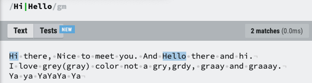
-
()는 그룹을 의미합니다. 만약 gray나 grey를 검색하고 싶을 경우, 그룹을 이용해서 a또는 e를 하나의 그룹으로 묶어줄 수 있습니다.gray | grey대신 그룹을 사용하면gr(e|a)y로 더 간결하게 표현할 수 있겠죠?
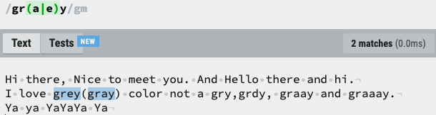
-
[]는 대괄호에 있는 모든 문자열을 검색합니다. gray, grey, grdy를 모두 검색한다 할 때 다음과 같이 쓸 수 있습니다.gr(a|e|d)y로 그룹을 묶고|연산자를 써도 되지만gr[aed]y로 하면[]연산자만 있어도 해당 패턴을 찾을 수 있게 됩니다.
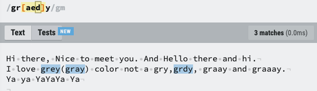
[]연산자에서 영어 대문자와 소문자 모두, 숫자 모두를 검색하려면 다음과 같이 작성합니다.[a-zA-Z0-9]:-는 ~부터 ~까지를 나타내는 걸 의미합니다.
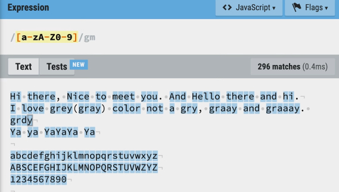
-
^는 뒤에 있는 문자가 아닐 때를 반환합니다. 3번의 예에서^를 붙이면 다음과 같습니다.[^a-zA-Z0-9]: 영어 대소문자, 숫자를 제외한 나머지인 "공백"만 검색되게 됩니다.
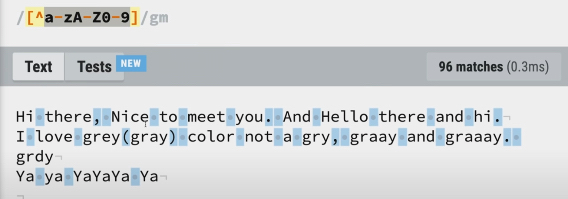
-
(?:)는 그룹()안에 있는 내용을 찾긴 하지만 기억하지 않는다는 의미입니다. 예를 들어gr(e|a)y에서?:를 그룹 앞에 적어준다면 해당 그룹을 찾아주진 않지만 그룹이 생성되지 않음을 확인할 수 있습니다.gr(?:e|a)y
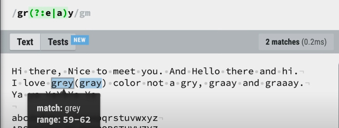
- 위 내용이 이해가 잘 가지 않는데요. 이 예시라면 더 쉽게 이해하실 수 있습니다. 만약
https://youtu.be/-ZClicWm0zM라는 유투브 주소에서youtu.be/뒤에 오는 아이디 -ZClicWm0zM만을 가져온다 가정할 때,http나www와 같은 패턴의 도움을 받아야하지만 찾아야 하는 대상은 아닙니다. 이 때 다음과 같이 정규 표현식을 작성할 수 있습니다. (이 표현식은 어려우므로 상세 설명은 생략하겠습니다)
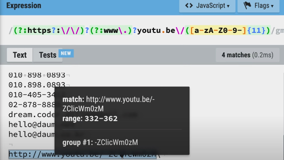
수량에 대한 표현 (Quantifiers)
| Chracter | 뜻 |
|---|---|
? |
없거나 있거나 (zero or one) |
* |
없거나 있거나 많거나 (zero or more) |
+ |
하나 또는 많이 (one or more) |
{n} |
n번 반복 |
{min,} |
최소 |
{min,max} |
최소, 그리고 최대 |
수량에 대한 표현은 찾을 문자열의 개수에 따라 달리 쓸 수 있습니다.
-
?는?앞에 오는 문자가 없거나 있는 경우를 모두 찾아줍니다. 예를 들어 gray에서 a가 없거나 있는 경우를 찾는다면 다음과 같습니다.gra?y: gry와 gray만 찾아줍니다.
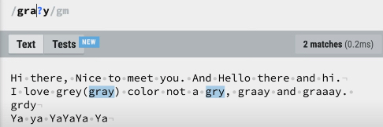
-
*는*앞에 오는 문자가 없거나, 있거나, 많거나를 모두 찾아줍니다. 마찬가지로 gray에서 a 뒤에 * 를 붙이면 다음과 같습니다.gra*y: gry, gray, graay, … 와 같이 찾아줍니다.
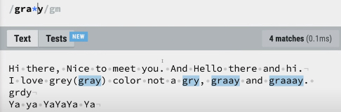
-
+는 하나 있거나 그 이상일 때 찾아줍니다.gra+y: gry를 포함하지 않고 a가 하나 이상 있는 문자열을 모두 찾아줍니다.
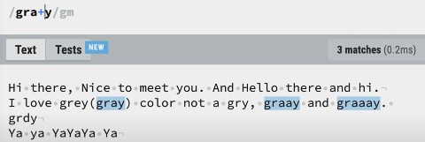
-
{n}는{n}앞에 오는 문자열의 개수가 n개일 때를 찾아줍니다.gra{2}y: a라는 문자열이 두 개여야 하므로 graay만 찾아줍니다.
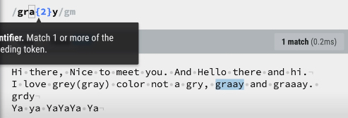
-
{min,}는{min,}앞에 오는 문자열의 최소 개수를 지정합니다.gra{2,}y: a라는 문자열이 최소 두 개 이상이여야 하므로 graay, graaay,…와 같은 문자열을 찾아줍니다.
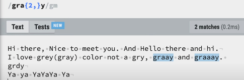
-
{min,max}는{min,max}앞에 오는 문자열의 최소와 최대 개수를 지정합니다.gra{2,3}y: a라는 문자열이 최소 2개, 최대 3개까지 가능하므로 graay, graaay만을 찾아줍니다.
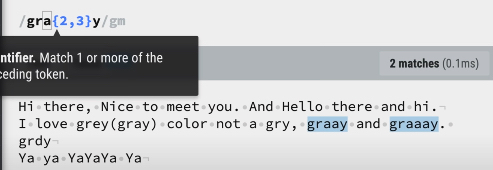
경계의 종류 (Boundary types)
| -------- | ---------------- |
| \b | 단어 경계 |
| \B | 단어 경계가 아님 |
| ^ | 문장의 시작 |
| $ | 문장의 끝 |
경계의 종류는 경계에 따라서 문자를 찾는 위치를 달리하고 싶을 때 사용합니다.
-
\b는 띄어쓰기가 없는 한 단어 내에서 앞에서 쓰이는 문자열, 혹은 뒤에서 쓰이는 문자열만 찾고 싶을 떄 사용할 수 있습니다.\bYa: Ya라는 문자가 단어에서 앞에 있을 경우만 검색하게 됩니다.
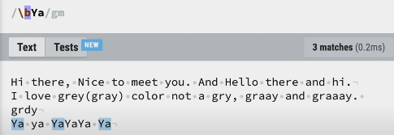
Ya\b: Ya라는 문자가 단어에서 뒤에 있을 경우만 검색하게 됩니다.
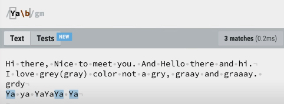
-
\B는\b의 반대되는 역할을 하여 단어 경계가 아닌 문자만 검색합니다 (눈치를 채셨다면 아시겠지만, 백슬래시 () + 대문자는 백슬래시 () + 소문자의 반대 역할을 합니다.)Ya\B: Ya라는 단어가 끝에 오지 않는 경우를 검색합니다.
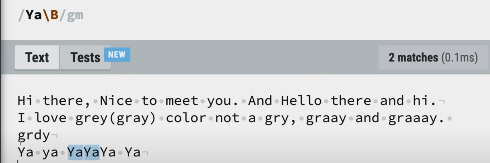
-
^는 단어 단위가 아니 문장의 시작에 있는 문자열을 검색합니다.^Ya: 문장 시작에 있는 Ya만 검색합니다.
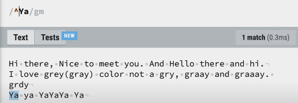
-
$는 반대로$는 문장의 끝에 있는 문자열을 검색합니다.Ya$는 문장의 끝에 있는 Ya만 검색합니다.
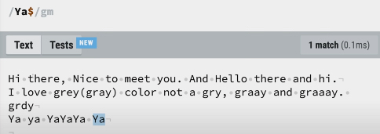
- 만약 플래그에서 m (multiline)을 사용하지 않으면, 전체 문장의 끝에 Ya가 있는지를 검색하기 때문에 하나도 검색되지 않음을 확인하실 수 있습니다.
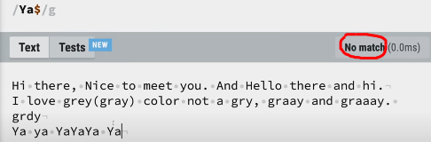
문자열의 종류 (Character classes)
| Chracter | 뜻 |
|---|---|
\ |
특수 문자가 아닌 문자 |
. |
줄바꿈 문자를 제외한 모든 글자 |
\d |
digit 숫자 |
\D |
digit 숫자 아님 |
\w |
word 문자 |
\W |
word 문자 아님 |
\s |
space 공백 |
\S |
space 공백 아님 |
자 이제 마지막 분류인 문자열의 종류는 문자열이 숫자냐, 문자냐, 공백이냐에 따라서 검색하고 싶을 때 사용합니다.
-
\는 특수 문자 (.,\,[],{},$등)를 찾을 때 필요합니다. 흔히 말하는 escape 문자이죠.\[: [ 문자열을 찾아줍니다.
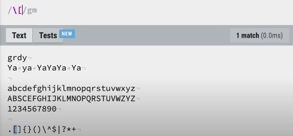
-
.은 줄바꿈 문자를 제외한 모든 글자를 검색합니다.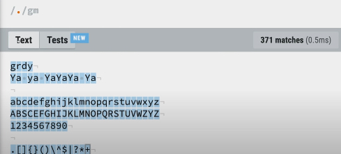
-
\d: digit의 약자로 숫자를 모두 검색합니다.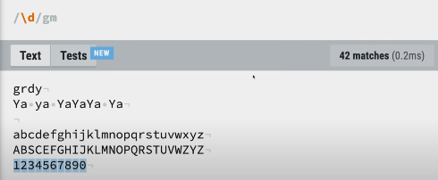
-
\D: 숫자가 아닌 모든 문자를 찾아줍니다.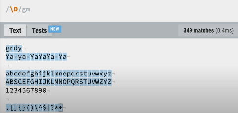
-
\w: word의 약자로 문자, 숫자를 모두 검색합니다.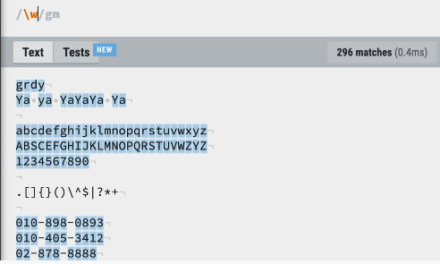
-
\W: 문자열을 제외한 것들을 검색합니다.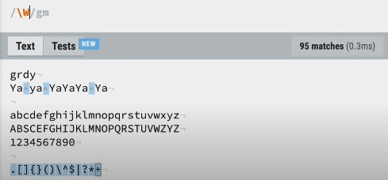
-
\s: space의 약자로 공백을 검색합니다.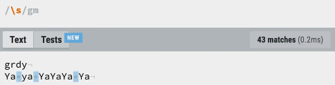
-
\S: 공백을 제외한 것들을 검색합니다.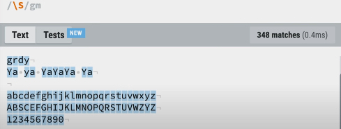
인생은 실전입니다.
네 이제 정규 표현식에 대해 길~게 정리했으니 실제 파이썬에서 연습해봐야겠죠?
파이썬에서 정규 표현식을 통해서 검색을 하기 위해서는 re라는 패키지를 임포트해야합니다. 근데 제 경우 따로 설치하지 않아도 되는 걸 보면 기본 패키지인가 봅니다.
1 | import re |
그리고, 유의할 점은 파이썬에서 정규 표현식을 쓸 땐 정규 표현식의 기본 요소 슬래시, 패턴, 플래그 중 패턴만 정규 표현식 인자에 넣으면 된다는 점입니다. 즉 /regex?/gm 형태 대신 regex만 넣는다는 뜻입니다. 보통, 플래그는 다른 인자로 넣어줍니다. (여기서는 플래그에 대해 다루지 않겠습니다)
이제 두 가지 예시로 넘어가도록 하겠습니다!
첫째, 전화번호 선택하기
이런 텍스트가 있을 때 전화번호 부분만 검색하려면 어떻게 할까요?
1 | text = """ |
정규 표현식은 한 번에 구상해서 짜기보단 step by step으로 더 표현식을 일반화하는 과정이 필요합니다. 따라서 단계별로 정규 표현식을 더 정밀하게 고쳐보겠습니다.
-
첫 번째 전화번호에 해당하는 정규 표현식을 가장 간단하게 쓰면 이렇게 됩니다.
1
\d\d-\d\d\d-\d\d\d\d
-
일단 숫자가 세 부분으로 나뉘는데 숫자의 개수가 각각 다르죠. 이를 반영하려면 수량에 대한 표현을 활용할 수 있습니다. 첫번째 부분은 2~3자리, 두번째 부분은 3~4자리, 세번째 부분은 4자리이므로 이렇게 쓸 수 있습니다.
1
\d{2,3}-\d{3,4}-\d{4}
-
근데 숫자를 나누는 구분자가
-, (공백),.로 다양하죠. 이를 그룹과 범위에 대한 표현 중 하나인[]로 묶는다면 해결할 수 있습니다.1
\d{2,3}[-\s.]\d{3,4}[-\s.]\d{4}
이를 파이썬 코드로 표현하면 re 패키지의 findall 메서드를 사용합니다.
1 | import re |
1 | Out [1]: ['02-232-3245', '010.3035.7272', '02 333 5555'] |
위와 같이 매칭되는 문자열 모두를 잘 찾아주는 것을 확인하실 수 있습니다.
그럼 이 표현식을 이용해서 전화번호의 구분자를 -로 통일해주려면 어떻게 할까요?
- 아까 text에서 전화 번호에 해당하는 정규 표현식 찾은 걸 적어주고,
- 바뀔 정규 표현식 (=구분자를
-로만 통일한 정규 표현식)을 적어주면 됩니다.
이를 파이썬 코드로 짜면 다음과 같습니다.
1 | print(pattern=re.sub(r'(\d{2,3})[-\s.](\d{3,4})[-\s.](\d{4})', |
sub 메서드는 네 인자로 구성됩니다.
pattern인자는 text에서 찾은 전화 번호 패턴을 의미하고repl은 바꾸고 싶은 형식을 지정합니다.string은 바꾸고자 하는 텍스트flags는 써도 되고 안써도 되는 인자로, 위에서 말씀드렸던 flag에 해당합니다.
근데 repl부분이 너무 간단하지 않나요? 자세히 보시면 바꿀 대상인 pattern에서 ()로 전화 번호의 세 부분을 세 그룹으로 만들어 줬습니다. 그렇기 때문에 repl부분에서는 \1, \2, \3 으로 간단하게 첫 번째, 두 번째, 세 번째 그룹을 지칭할 수 있습니다. 그래서 구분자만 -로 고정하고 식을 완성하면 r'\1-\2-\3'이 되는 것입니다.
자, 이제 이걸 PySpark에서 DataFrame 형태로 되어 있을 때를 가정해봅시다. 즉 아래와 같은 형태로 말이죠.
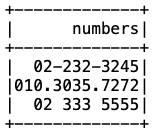
이는 이와 같이 코드를 작성하였습니다.
1 | from pyspark.sql import * |
위에서 파이썬으로 전화번호의 패턴을 통해 찾아서 다른 패턴으로 바꿔줄 때 re.sub을 썼었는데, PySpark에서는 regexp_replace라는 함수를 이용합니다.
1 | from pyspark.sql import functions as f |
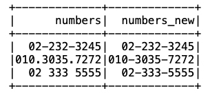
regexp_replace의 인자를 설명하자면,
- 바꿀 대상의 컬럼은 numbers이고
- 찾을 패턴은 공백이나
.으로 된 부분이기 때문에[]안에 공백(\s)과.을 넣었습니다. - 바꿀 패턴은 이 두 구분자를
-로 통일시켜주는 것이기 떄문에'-'가 됩니다.
둘째, 이메일에서 아이디와 도메인 분리하기
자 이제 연습을 탄탄히 했으니 맨~앞에서 언급했던 예시로 돌아가봅시다. “email” 컬럼을 "id"와 "domain"컬럼으로 나누는 것인데요.
이를 위해 PySpark에 DataFrame을 만들었습니다.
1 | df2 = spark.createDataFrame([('hello@gmail.com',), |
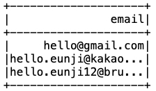
위와 같이 DataFrame이 만들어졌습니다.
이를 마찬가지로 id와 domain 컬럼으로 만드려면 다음과 같이 과정을 거칩니다.
- 먼저 id는
@앞에 있는 것만 검색하면 됩니다. 즉,@뒤에 있는 것을 패턴으로 찾아 공백으로 바꿔준다면 id를 얻을 수 있겠죠. - 두번째로, domain은
@뒤부터.전까지 찾아주면 됩니다.
이를 PySpark 코드로 구현하면 다음과 같습니다.
1 | df2.withColumn('id', f.regexp_replace('email','@(.*)', ''))\ |
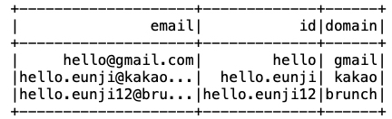
- id 컬럼에는 앞서 마찬가지로
regexp_replace를 사용하여@뒤에 있는 패턴들을 지워주면 되는데요. 여기에서 쓰인 패턴은@(.*)입니다.@는 무조건 있어야 하고,- 그 뒤를
()로 묶어 모두 포함되도록 했습니다. - 그리고
.*은.이 없거나, 여러 개 있어도 됨을 의미합니다.
- domain 컬럼은
regexp_extract함수를 이용하여 해당 패턴을 만족하는 문자열을 추출하도록 짰습니다.- 마찬가지로
@는 무조건 있어야 하고 - 그 뒤를
()로 묶어 모두 포함되도록 했습니다. - 그리고
\w*를 통해 문자가 없거나, 여러 개 있을 경우 검색할 수 있도록 하였습니다. - 그리고 regexp_extract(컬럼, 패턴, 1)에서 1은 몇 번째 그룹을 추출할건지에 대한 인덱스입니다.
- 마찬가지로
이렇게 두 컬럼을 성공적으로 만들었습니다!
원활한 비교를 위해 기존의 코드를 다시 가져와볼까요?
1 | select |
기존의 코드에 비해 정규 표현식을 사용했을 때 좋은 점은
- 하드 코딩에서 벗어나서 일반화가 가능하다는 점 (새로운 도메인이 들어와도 문제가 없다는 점)
- 오타가 나도 괜찮다는 점
- 12줄이 2줄로 간결하게 표현된다는 점
이 있을 것 같습니다. 이 글을 또 정리하면 계속 참조하면서 정규 표현식이 더 익숙해질 것 같습니다.
이 글을 마치며
오늘 포스팅은 정규 표현식의 네 가지 분류에 대해 알아보고, PySpark에서의 실습을 해보았습니다. 며칠 전 퓨처 스킬이라는 곳을 접하게 되었는데요. 해당 사이트는 강의 클립을 짧게 보여주고 몇 개의 문제를 내어 스스로 문제를 풀고 피어 리뷰, 토론 등을 자유롭게 할 수 있는 사이트입니다. 이 곳에도 정규 표현식에 대한 문제들이 있으니 복습해보시길 바랍니다!
References
- 정규 표현식 더 이상 미루지 말자YouTube 강의